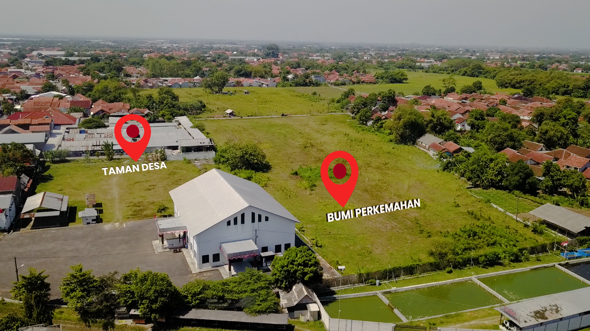

Wacana pembangunan Buper dan Alun - Alun Di Karangsari
Harapan warga Desa Karangsari untuk memiliki fasilitas publik yang representatif kini menyisakan tanda tanya besar.
Dalam video profil resmi Desa Wisata Karangsari, pemerintah desa sempat memaparkan rencana ambisius pembangunan Bumi Perkemahan (Buper) di area belakang GOR Karangsari, serta pembangunan Alun-Alun Gentong yang direncanakan berlokasi di samping GOR, tepat di dekat kawasan Pasar Karangsari.
Integrasi kedua proyek ini digadang-gadang akan menjadi motor penggerak ekonomi baru bagi warga lokal dan memperkuat posisi Karangsari sebagai destinasi wisata unggulan di Kabupaten Cirebon. Namun, pantauan di lapangan menunjukkan kondisi yang jauh dari rencana tersebut. Lahan yang semula diproyeksikan untuk area perkemahan hingga saat ini masih berupa hamparan sawah yang aktif ditanami padi.
Ketidakjelasan jadwal eksekusi pembangunan ini mulai menimbulkan pertanyaan di tengah masyarakat. Meskipun bukti rencana tersebut telah terpublikasi secara luas melalui dokumentasi video desa, belum ada tanda-tanda pengerjaan fisik maupun sosialisasi lanjutan mengenai kapan proyek ini akan dimulai. Warga berharap agar wacana yang telah menjadi konsumsi publik tersebut segera menemui titik terang, sehingga lahan tersebut dapat benar-benar memberikan manfaat nyata sesuai dengan visi Desa Wisata yang telah dicanangkan.